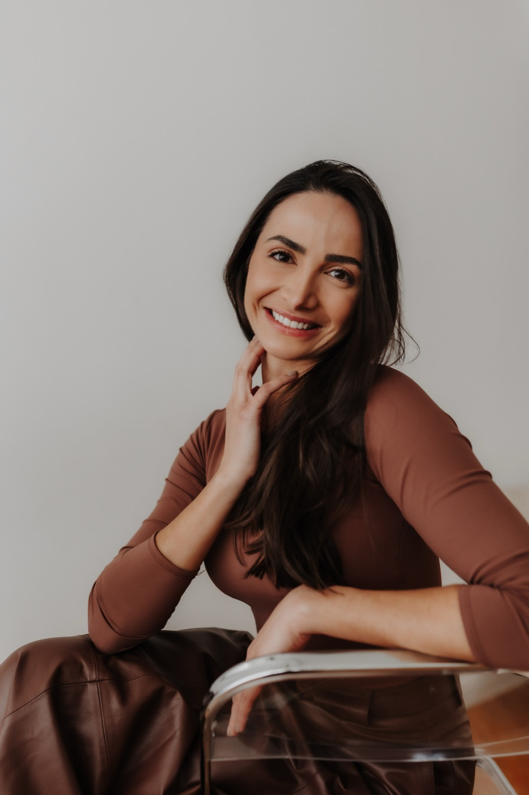
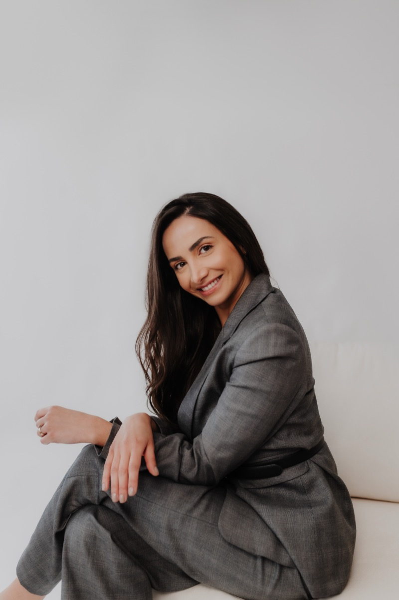

Dra. Ana
De Bortoli
Otorrinolaringologista · adulto e infantil
Cirurgia de amígdala e adenoide com radiofrequência (coblation) e cirurgia endoscópica do nariz e dos seios da face, em São Paulo. Tratamento e acompanhamento de rinite, sinusite e otites, e de problemas da respiração, da audição e do sono.
Médica · CRM-SP 221636 · Otorrinolaringologia · RQE 136554

O que eu opero
Do nariz à garganta,
na criança e no adulto
Crianças
Amígdala
Com radiofrequência (coblation): retirada parcial (intracapsular) ou total (extracapsular).Adenoide
Com radiofrequência (coblation) e visão por câmera (endoscópica).Tubo de ventilação
Para o líquido que se acumula atrás do tímpano.Cornetos
A "carne esponjosa" que pode obstruir o nariz.
Adultos
Cirurgia endoscópica dos seios da face
Para a sinusite crônica ou de repetição que não melhora com o tratamento clínico.Desvio de septo
Para quem respira mal pelo nariz por causa do septo.Cornetos
A "carne esponjosa" que pode obstruir o nariz.Rinosseptoplastia funcional
Para a obstrução do nariz que vai além do desvio de septo e dos cornetos, como a insuficiência da válvula nasal, o desvio caudal e os desvios anteriores do septo.Amígdala no adulto
Com radiofrequência (coblation).
Cirurgia com radiofrequência (coblation)
Duas formas de operar
a amígdala
A radiofrequência (coblation) usa uma energia que, passando pelo soro fisiológico, forma uma camada fina de plasma na ponta do instrumento. Esse plasma desfaz o tecido sem queimar, em temperatura bem mais baixa que a do bisturi elétrico, e ao mesmo tempo aspira e controla o sangramento. Com ela, a amígdala pode ser operada de duas formas.
Intracapsular (parcial)
Retira cerca de 90 a 95% do tecido da amígdala e mantém a cápsula, uma camada fina que cobre o músculo da garganta.
Extracapsular (total)
Remove a amígdala inteira, com a cápsula.
A escolha é individual e depende da história de cada paciente. Há situações em que a forma parcial não é indicada, como o abscesso. Na consulta, eu explico as duas, com os benefícios e os riscos de cada uma.

Formação e atuação
Formação
- MedicinaUniversidade de Caxias do Sul, Rio Grande do Sul
- Residência em OtorrinolaringologiaHospital Edmundo Vasconcelos, São Paulo, com o Dr. Aldo Stamm
- Observership em Rinologia e Base de CrânioStanford University, com o Dr. Peter H. Hwang
- Retaguarda de otorrinolaringologiaHospital Israelita Albert Einstein e Hospital Sírio-Libanês
- Instrutora em cursos de dissecçãoNo Brasil e na Europa (Madri e Portugal)
- Cofundadora de curso para otorrinosCurso de cirurgia de amígdala e adenoide com radiofrequência em São Paulo, cinco turmas
Pesquisa. Desenvolveu, com o Dr. Raimar Weber, o e-A.L.Ex, um modelo 3D a partir de tomografia para o treino da adenoidectomia endoscópica por radiofrequência (coblation).
Publicado na revista americana de otorrinolaringologia OTO Open (2025): Three-Dimensional Printing Simulator for Endoscopic Adenoidectomy Training.
Consultório
Oscar Freire, Pinheiros
Endereço
Rua Oscar Freire, 2250, conjuntos 303 e 304, Pinheiros, São Paulo, SP, CEP 05409-011.
Ver no mapa
Fonoaudiologia no mesmo lugar
Equipe de fonoaudiologia com audiometria e atendimento diferenciado para crianças, com duas fonoaudiólogas no exame. Ele pode ser feito no consultório e discutido na mesma consulta.
Equipe
Atendo no consultório junto com o Dr. Raimar Weber, otorrinolaringologista (CRM-SP 110.873).
Para quem vem de fora
Vem de outra cidade?
Primeira consulta online
A primeira consulta pode ser online. Se houver indicação, a cirurgia é realizada em São Paulo. A equipe organiza as datas pelo WhatsApp.
Como é a cirurgia
A cirurgia é realizada nos principais hospitais de São Paulo. Os honorários médicos e da equipe são particulares; a parte hospitalar pode ser coberta pelo seu plano de saúde, se ele cobrir o hospital onde operamos.
Atendimento particular
Entregamos a documentação para você pedir o reembolso ao seu plano de saúde, conforme o contrato do plano.